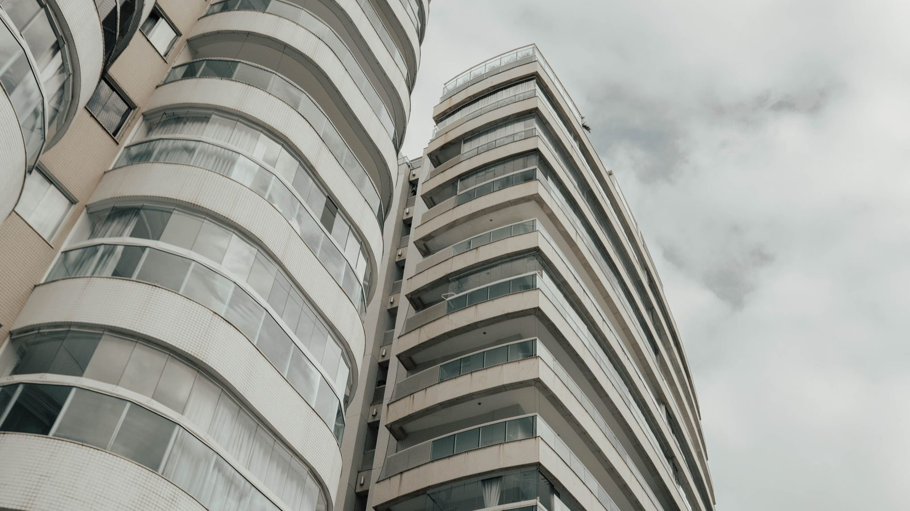

Itapema · Assistência Social
Itapema · Assistência SocialCaminhada do Agosto Lilás sai da Praça da Paz às 9h desta quinta, em Itapema
A campanha que trata do mesmo assunto, do lado de cá da ponte.
O projeto Proteção Mora ao Lado foi lançado em 31 de agosto pelo MPSC com o Secovi/SC. Traz cartaz na área comum, guia para síndico, capacitação e um selo para o prédio que aderir.
Em 30 segundos · Modo de Leitura, formato original Santa Informa
O MPSC lançou em 31 de agosto o projeto Proteção Mora ao Lado.
A ideia é transformar o condomínio em aliado contra a violência às mulheres.
Foi feito pela Ouvidoria das Mulheres e pelo NEAVIT, com o Secovi/SC.
Entra material gráfico nas áreas comuns do prédio.
Entram conteúdos digitais para o grupo de mensagens do condomínio.
Vem um guia prático para síndico e colaborador.
E vêm capacitações feitas com o Secovi/SC.
Quem aderir pode receber o Selo Proteção Mora ao Lado.
O MPSC diz que não transfere ao condomínio a apuração do caso.
No Mapa do Feminicídio, 71% dos casos foram em contexto íntimo.
Santa CatarinaPublicada em Redação Santa Informa

O Ministério Público de Santa Catarina lançou na segunda-feira, 31 de agosto, o projeto Proteção Mora ao Lado. A proposta é transformar os condomínios em aliados na prevenção e no enfrentamento à violência contra as mulheres. Quem desenvolveu foi a Ouvidoria do MPSC, por meio da Ouvidoria das Mulheres, junto com o Núcleo de Enfrentamento às Violências e Apoio às Vítimas, o NEAVIT, em parceria com o Secovi/SC, o sindicato que reúne as administradoras de imóveis e de condomínios do estado.
São quatro entregas. A primeira é material gráfico para as áreas comuns, com informação sobre violência contra as mulheres, formas de buscar ajuda e os canais da rede de proteção. Junto vêm conteúdos digitais e audiovisuais, feitos para circular no grupo de mensagens do condomínio e no aplicativo que muitos prédios já usam para avisar de encomenda e de assembleia.
A segunda entrega é um guia prático para síndicos e colaboradores, com orientação objetiva sobre como agir ao identificar uma possível situação de violência: quais serviços acionar, como orientar a vítima e quais condutas evitar. A terceira são formações feitas com o Secovi/SC, sobre prevenção, acolhimento e acesso à rede. O MPSC deixa claro no material que não pretende transferir a quem trabalha no condomínio a responsabilidade pelo atendimento ou pela apuração da violência. A ideia é que a pessoa saiba encaminhar, e não que ela investigue.
A quarta entrega é o Selo Proteção Mora ao Lado, dado ao condomínio que aderir. Serve de reconhecimento e deixa visível na portaria que aquele prédio entrou no projeto.
Porque é ali que a violência acontece. O Mapa do Feminicídio, estudo do próprio MPSC, analisou os casos de 2020 a 2024 e encontrou 335 assassinatos motivados por violência de gênero, dentro de um total de 596 mortes violentas de mulheres registradas até 2025. Em 71% dos casos o contexto era íntimo, de companheiro ou ex-companheiro. Na conta do estudo, a cada três mulheres assassinadas em Santa Catarina, duas foram mortas por serem mulheres.
Itapema é cidade de prédio. Boa parte da população mora em condomínio, com síndico, portaria e grupo de mensagens funcionando o ano inteiro. É um canal que já existe e que hoje serve para avisar de manutenção de elevador. O projeto quer usar esse mesmo canal para outra coisa. A adesão é do condomínio, então depende de síndico e assembleia quererem entrar.
O resumo de 30 segundos está no topo e a versão completa é o texto acima. Aqui ficam as três leituras da casa sobre o mesmo assunto.
Clara, a otimista
O projeto parte de uma coisa simples e verdadeira: informação que não chega não protege ninguém. E o condomínio é um lugar onde a informação chega, porque já tem mural, portaria e grupo de mensagens funcionando.
Não custa caro e não exige obra. Custa vontade do síndico e uma pauta na assembleia. Prédio que entrar sai na frente, e o vizinho passa a saber o número que precisa discar.
Seu Prudêncio, o criterioso
Merece atenção o desenho da adesão. O projeto é voluntário, e voluntário costuma atrair quem já estava sensível ao tema. O condomínio que mais precisaria da capacitação é justamente o que não vai pedir. Sem meta de alcance e sem calendário público das formações, fica difícil saber se o material vai parar em cem prédios ou em cinco.
Vale acompanhar também o cuidado com o limite de papel. O MPSC diz no texto que não transfere ao síndico a apuração, e isso está certo. Na prática, porém, quem trabalha na portaria pode acabar no meio de uma situação séria sem retaguarda nenhuma. Uma sugestão útil: o guia precisa deixar em letra grande o que fazer quando o risco é imediato, com telefone, e o condomínio deveria registrar em ata quem foi capacitado.
E o acerto está no diagnóstico. Se 71% dos casos acontecem em contexto íntimo, atacar o problema onde as pessoas moram faz mais sentido do que campanha genérica em outdoor. É barato, é direto e chega perto.
Caco, o sarcástico
O grupo do condomínio hoje serve para discutir vaga de garagem, barulho de furadeira no domingo e a cor da nova pintura da fachada. Agora vai ter uma mensagem que importa de verdade no meio.
Também vai ter selo na portaria. Prédio adora selo, ao lado da placa do síndico do ano e do aviso de que a piscina fecha às 22h.
Brincadeira à parte, é o tipo de cartaz que a gente torce para nunca precisar ler. Mas é melhor ele estar lá, no elevador, do que ninguém saber para onde ligar.
Fontes: Ministério Público de Santa Catarina, publicação de 1º de setembro de 2026 sobre o projeto lançado em 31 de agosto, de onde saem o objetivo, as instituições envolvidas (Ouvidoria do MPSC, Ouvidoria das Mulheres, NEAVIT e Secovi/SC), a distribuição de material gráfico e de conteúdo digital, o guia para síndicos e colaboradores, as capacitações, o Selo Proteção Mora ao Lado e a ressalva de que o projeto não transfere ao condomínio a responsabilidade pelo atendimento ou pela apuração. Os números de violência são do Mapa do Feminicídio de Santa Catarina, também do MPSC, de onde saem as 596 mortes violentas de mulheres até 2025, os 335 assassinatos por violência de gênero entre 2020 e 2024, o percentual de 71% em contexto íntimo e as taxas por 100 mil mulheres. A imagem do topo é ilustrativa, de banco gratuito, e não retrata nenhum condomínio participante.
Itapema · Assistência SocialA campanha que trata do mesmo assunto, do lado de cá da ponte.
 Itapema · Habitação
Itapema · HabitaçãoO tamanho da vida em condomínio na cidade, medido em apartamento novo.
 Santa Catarina · População
Santa Catarina · PopulaçãoQuanta gente o estado ganhou, e onde essa gente está morando.